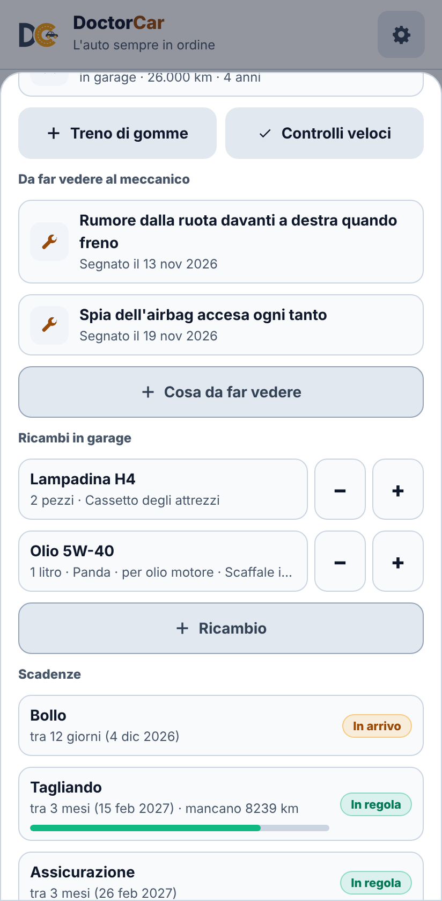
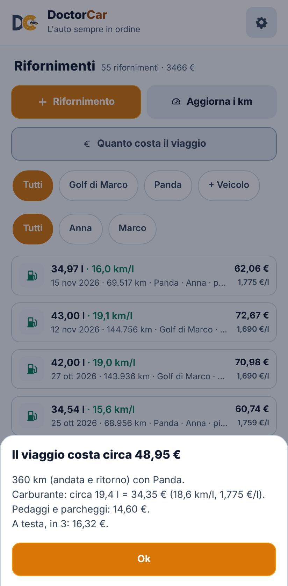
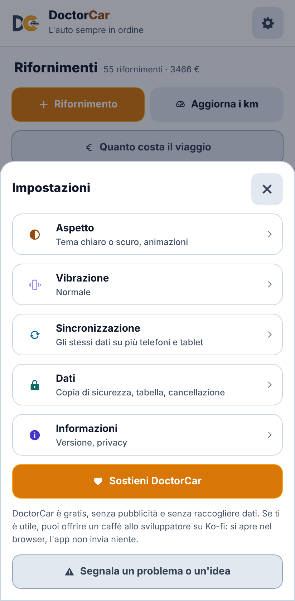

DoctorCar
Tutorial: come si fa, passo per passo
Versione dell'app: {{VERSIONE}} · aggiornato il {{DATA}}
Interventi e foto
Segnare un intervento

Dopo il meccanico, il gommista, la revisione…
- In Home tocca + Intervento.
- Controlla veicolo, data e km (sono già proposti).
- Tocca le voci fatte (anche più di una: tagliando, olio, filtri…).
- Scrivi officina e costo, poi Salva: la scadenza collegata si aggiorna da sola.
Rifare un intervento come l'ultima volta
Per il tagliando di ogni anno.
- Apri + Intervento.
- In «Come l'ultima volta» tocca il lavoro da ripetere: voci, officina e costo si compilano da soli.
- Correggi se serve e Salva.
Aggiungere la foto della fattura
Per tenere la prova di quello che hai pagato.
- Apri l'intervento (nuovo o già salvato).
- Tocca Scatta foto o Scegli foto (fino a 12).
- Salva. Tocca una foto per vederla grande e ingrandirla.
Cercare un intervento

«Quando ho cambiato le pastiglie?»
- Apri Interventi.
- Scrivi nella ricerca (officina, voce o descrizione) o scegli il veicolo.
- Tocca l'intervento per vederlo o correggerlo.
Rifornimenti, km e spese
Segnare un pieno

Al distributore.
- In Home tocca + Pieno.
- Scrivi i km del cruscotto.
- Scrivi due fra litri, prezzo al litro e importo: il terzo si calcola.
- Lascia acceso «Pieno» se hai riempito il serbatoio (serve per il consumo) e Salva.
Aggiornare i km
Ogni tanto, anche senza fare il pieno.
- In Home tocca Km.
- Scrivi i km che leggi sul cruscotto e salva. Le stime delle scadenze diventano più precise.
Segnare una spesa veloce

Pedaggio, parcheggio, lavaggio, multa.
- In Home tocca Spesa.
- Scegli che spesa è, scrivi importo e data.
- Per una multa non ancora pagata spegni «Multa già pagata»: DoctorCar ti ricorda di pagarla entro 5 giorni con lo sconto del 30%.
- Tocca Segna.
Impostare il budget del mese

Per tenere sotto controllo le spese.
- Apri Spese → Imposta il budget.
- Scrivi quanto vuoi spendere al mese.
- Da ora vedi quanto hai speso, la stima a fine mese e un avviso se lo superi.
Meccanico, ricambi e viaggi
Segnare una cosa da far vedere al meccanico

Senti un rumore o si accende una spia.
- Apri la scheda dell'auto (Veicoli → l'auto).
- In «Da far vedere al meccanico» tocca Cosa da far vedere.
- Scrivi cosa c'è e tocca Salva. In officina, «Per l'officina» la manda insieme alla storia dell'auto.
Segnare che è stata sistemata
Il meccanico ha risolto.
- Dopo aver segnato l'intervento, nella finestra Già che ci sei accendi la cosa sistemata e tocca Fatto.
- Oppure tocca la riga nella scheda dell'auto e accendi Sistemato.
Tenere il conto dei ricambi in garage

Olio, lampadine, spazzole che tieni da parte.
- Nella scheda dell'auto tocca Ricambio (o Veicoli → Magazzino → Ricambio, e scegli l'auto).
- Scrivi cosa, quanti, come si conta e, se vuoi, «Avvisami quando ne restano» e «Lo usi per».
- Con − e + aggiorni la quantità; sotto il minimo compare Da ricomprare.
Fare la lista della spesa dei ricambi
Prima di andare al negozio di ricambi.
- Veicoli → Magazzino.
- Tocca Lista della spesa: c'è tutto quello finito o sotto il minimo, auto per auto.
- Mandala a chi vuoi o incollala dove ti serve.
Sapere quanto costa un viaggio

Prima di partire, o per dividere le spese.
- In Pieno tocca Quanto costa il viaggio.
- Scrivi i km, le persone, i pedaggi e scegli se è andata e ritorno.
- Tocca Calcola: vedi il totale e quanto spende ognuno.
Copia di sicurezza e file
Fare una copia di sicurezza

Prima di cambiare telefono, e ogni tanto.
- Impostazioni → Dati → Esporta copia (conferma con impronta o PIN).
- Scegli una password di almeno 12 caratteri e dove salvare il file.
- Conserva file e password in posti sicuri.
Riprendere una copia
Su un telefono nuovo.
- Impostazioni → Dati → Importa copia e scegli il file.
- Scrivi la password.
- Scegli Unisci (aggiunge) o Sostituisci (rimpiazza).
Copia automatica ogni settimana
Per non pensarci più (app Android).
- Impostazioni → Dati → Scegli la cartella (anche una cartella di Drive).
- Scrivi la password una volta: resta protetta nel telefono.
- Ogni settimana DoctorCar salva una copia cifrata e tiene le ultime 5.
Portare i dati da un'altra app
Da Fuelio, Drivvo, Simply Auto, aCar, Fuelly.
- Nell'altra app esporta i dati in CSV.
- In DoctorCar: Impostazioni → Dati → Importa da un'altra app (CSV) e scegli il file.
- Controlla l'anteprima e conferma: i doppioni vengono saltati.
Libretto in PDF e foglio per l'officina
Per vendere l'auto o andare dal meccanico.
- Apri la scheda dell'auto.
- Libretto in PDF: tutta la manutenzione con date e km, da condividere o salvare.
- Per l'officina: un foglio con l'auto e gli ultimi lavori da mandare al meccanico.